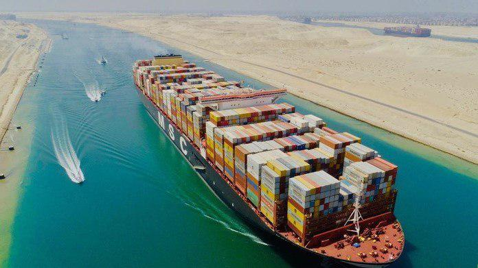

Транспортная артерия | Гигантский контейнеровоз Ever Given сняли с мели в Суэцком канале
 Инженерные бригады сняли с мели заблокировавший Суэцкий канал гигантский контейнеровоз Ever Given.
Об этом, ссылаясь на свои данные, пишет пресс-служба одного из крупнейших в мире операторов морских перевозок Inchcape Shipping.
"Контейнеровозу Ever Given была успешно придана плавучесть в 05:30 утра (по Киеву)", – пишут в компании.
Позднее, около 09:00, это подтвердили и в администрации Суэцкого канала.
Участвующий в операции сотрудник инженерной компании сказал, что снять контейнеровоз с мели помогли "более сильные, чем обычно, приливы".
СПРАВКА:
Суэцкий канал – бесшлюзовый судоходный канал в Египте с 1869 года, соединяющий Средиземное и Красное моря. Длина – 160 км, ширина по зеркалу воды – до 350 м, по дну – 45-60 м, глубина – 20 м. Это условная граница между Африкой и Евразией, а также кратчайший водный путь между Индийским океаном и акваторией Средиземного моря Атлантического океана. Первый прообраз канала был прорыт во втором тысячелетии до н. э.
Суэцкий канал соединяет Средиземное и Красное моря, благодаря ему суда могут передвигаться между Европой в Азией,
не огибая Африканский континент. Длина канала 160 километров, ширина — до 250 метров, глубина — до 20 метров.
Контейнеровоз Ever Given длиной 400 метров и грузоподъемностью порядка 224 тысяч тонн направлялся из Китая в
Нидерланды и во вторник сел на мель на 151-м километре канала, перегородив его и заблокировав движение.
Компания Evergreen, в управлении которой находится контейнеровоз, в пятницу заявляла, что потребуется как минимум два-три дня, чтобы снять судно с мели.
В субботу глава администрации Суэцкого канала Усама Рабиа заявил, что снять судно с мели пытаются 10 буксиров, и отметил, что ситуация осложняется размерами
судна и числом контейнеров на нем. Спасатели освободили судно после того, как было извлечено 27 тысяч кубометров песка.
Агентство Bloomberg отмечает, что пока неясно, как скоро канал будет открыт для движения. Сейчас в очереди на проход через
Суэцкий канал находятся более 450 различных судов. По данным агентства, блокировка канала стоит мировой экономике почти десять миллиардов долларов в день.
Ранее источник в компании-операторе канала Gulf Agency Company (GAC) сообщил РИА Новости, что после разблокировки Суэцкий канал будет
работать круглосуточно для пропуска скопившихся у входов и в озере в центральной части грузовых кораблей. Как правило, корабли движутся
по каналу колоннами, выдвигающимися в 03:30 из Порт-Саида (северный вход в канал) и в 04:00 из Суэца (южный вход), и должны пройти весь канал до 23:00.
Источник: https://news.liga.net/world/video/gigantskiy-konteynerovoz-ever-given-snyali-s-meli-v-suetskom-kanale-inchcape-shipping
Смотрите также: